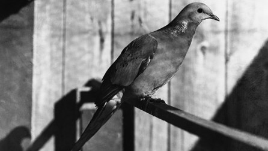
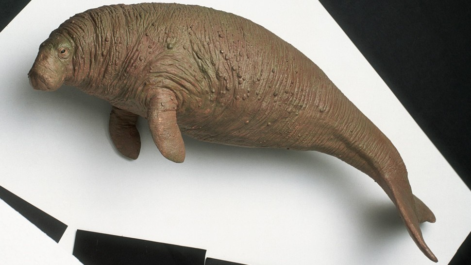

Paloma migratoria

Aunque durante años las palomas migratorias fueron perseguidas y cazadas por destrozar las cosechas, no fue hasta que su carne se hizo popular hasta que su situación se agravó. Tampoco ayudó el hecho de que los colonos que iban asentándose hacia el oeste arruinaran el hábitat de estos pájaros a un paso alarmante.
Vaca marina de Esteller

En los tiempos en los que el naturalista alemán Georg Steller las localizó y describió en 1741, su población ya estaba amenazada quizás debido a la caza de los pueblos indígenas. Su exterminación se aceleró con la llegada de los pescadores y cazadores europeos de focas. Las vacas marinas comenzaron a cazarse por su carne, piel (utilizada para construir embarcaciones) y aceite (para lámparas). En 1768, apenas 30 años después de ser localizadas por Steller, la vaca marina fue declarada extinta.